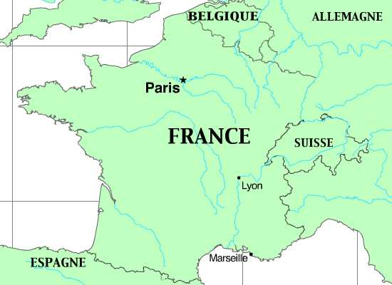

LANGUE ET CULTURE 3
Marseille
With a population of over 800,000, Marseille is France’s third largest city (after Paris and Lyon). Marseille was originally named Massilia by Greeks from Phocaea, an Ionian city in Asia Minor. Today, Massilia constitutes the west coast of Turkey. Greek culture spread to the interior of France from Massilia and to the coasts of Spain, where the Greeks of Massilia founded more colonies. Today Marseille is a bustling, cosmopolitan port with a large immigrant population. The majority of immigrants to Marseille come from the former North African French colonies of Tunisia, Algeria, and Morocco.
